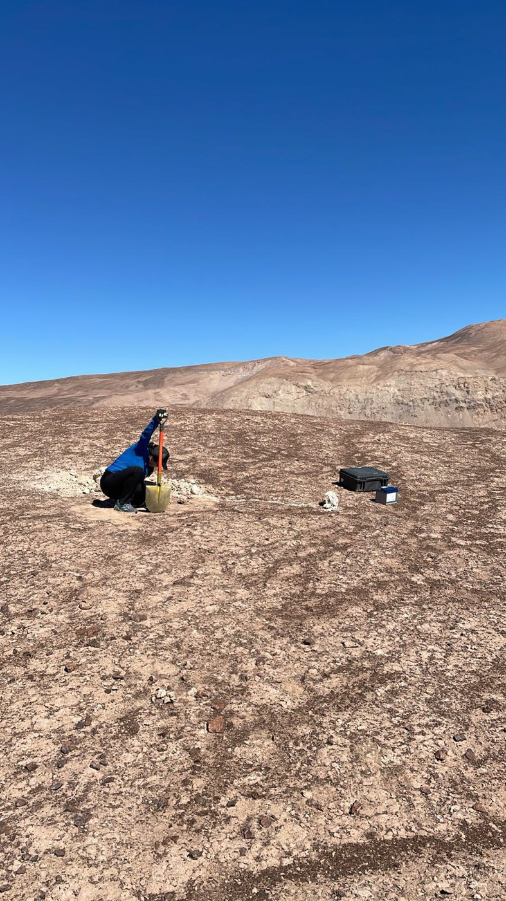
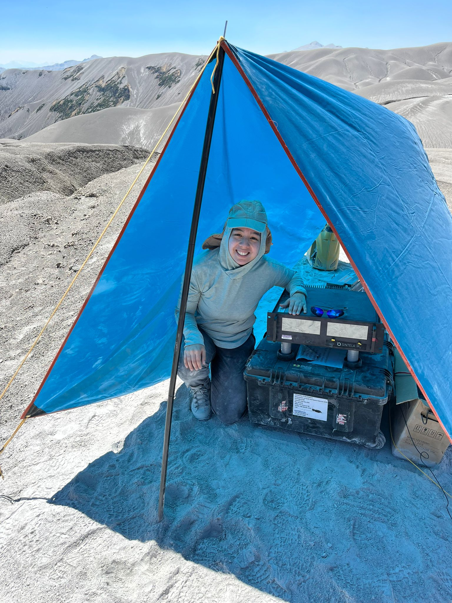
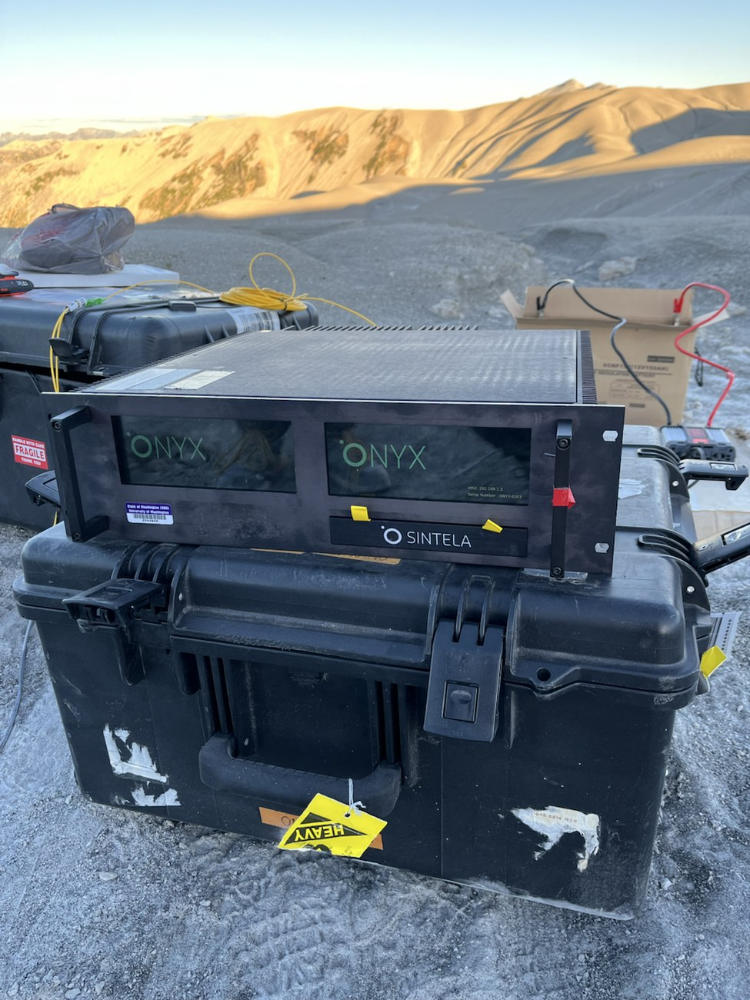
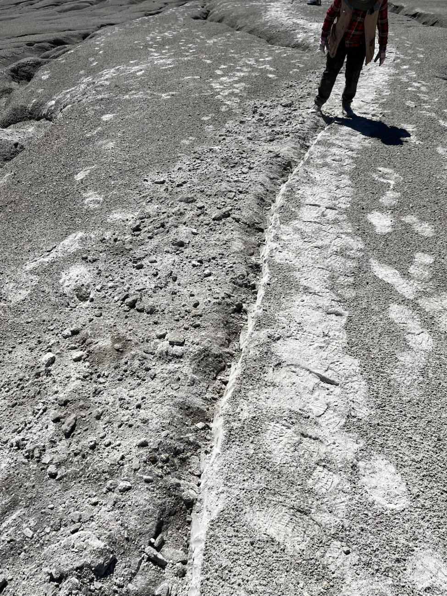
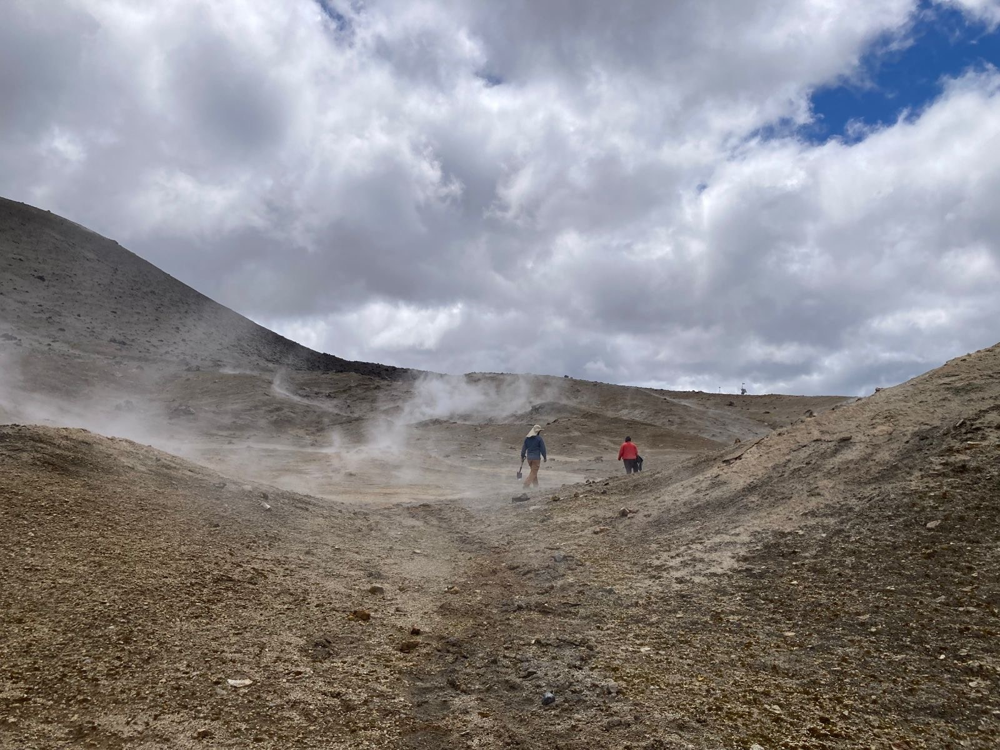
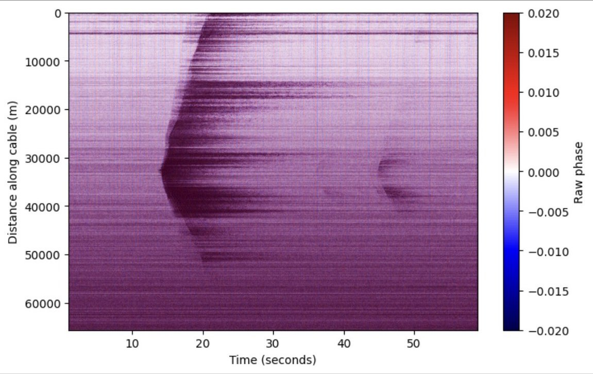
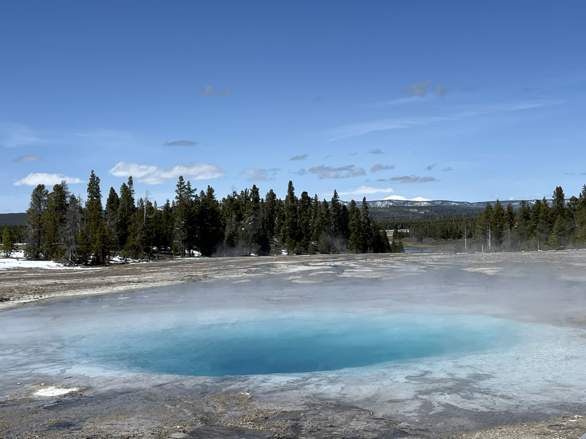
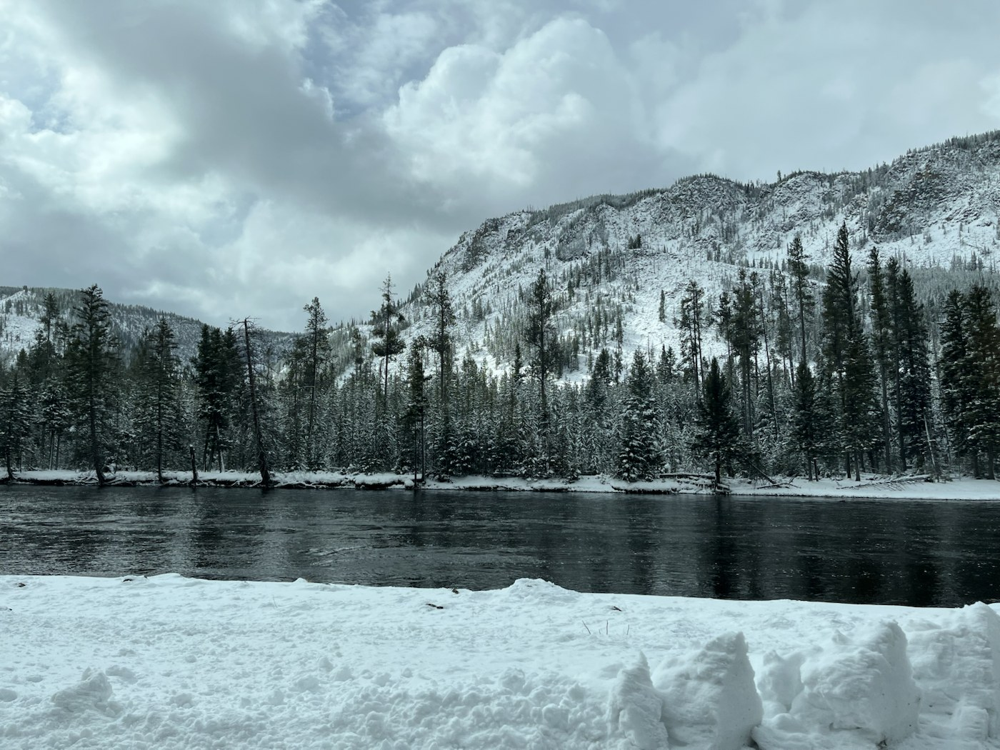

Lo que ya hemos medido en terreno
Antes de ofrecer servicios comerciales, probamos la detección distribuida en terreno: en un mineroducto en operación, en un volcán activo y, junto a la University of Washington, en Yellowstone:
Mineroducto industrial
Análisis acústico continuo sobre más de 60 km de fibra óptica a lo largo del trazado de un mineroducto industrial en operación. Captura simultánea de variables dinámicas internas y externas.
- Sismicidad natural regional: registro de eventos sísmicos a lo largo del trazado sin sensores discretos dedicados.
- Reflexiones estructurales (preliminar): se observan reflexiones que podrían asociarse a puntos singulares del ducto; los datos son recientes y su interpretación sigue en curso.
- Ruido del flujo de pulpa: registro del ruido interno que genera el transporte de mineral; su calibración sigue en curso.


Ondas P y S de un sismo registradas por la fibra del mineroducto, en sus primeros 30 km desde la costa. Las curvas marcan la llegada de cada onda, detectada automáticamente con PhaseNet, una red neuronal de picado sísmico.
Hipocentro según el CSN: frente a la costa de Tarapacá, 39 km de profundidad. Ver informe oficial →
Volcán Cordón Caulle
Tendido experimental de ~2 km de cable de fibra óptica enterrado manualmente en superficie. Con tomografía de ruido sísmico ambiental, sin fuentes artificiales, estamos obteniendo un perfil del subsuelo volcánico; el procesamiento final sigue en curso.
- Perfil 2D continuo de velocidades del subsuelo, confiable hasta 500 metros de profundidad.
- Detección multievento de microsismicidad volcánica local de baja y media frecuencia.
- Firmas hidrotermales: registro de eventos microsísmicos asociados a procesos de desgasificación activa.





Evento de emanación de gases registrado por la fibra enterrada. La señal aparece primero en el tramo más cercano a la fuente, cerca del metro 1.000 del cable, y luego se extiende a lo largo de la fibra.
Yellowstone, EE.UU.
Participación en un despliegue DAS en ambiente volcánico e hidrotermal junto a la University of Washington (abril 2026).




Co-diseñe un piloto de validación con nosotros.
Conversemos su caso en una reunión técnica: evaluamos con usted si DAS es la herramienta adecuada y cómo sería un piloto.
Co-diseñar piloto →